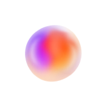

Hey, I'm Ravi.
Now Sr UX Designer at Virtusa

I'm a Senior UX Designer with 8+ years in UX research, design and team mentorship across banking, e-commerce and real estate insurance, now a Senior Consultant in UX at Virtusa. I turn in-depth research and usability testing into intuitive, user-centric interfaces, and I'm based in Hyderabad, India.
This is my path.Highlights
-
Senior Consultant, UX
Designing for Cubic Transportation Systems at Virtusa, including the Translink Merchant app, since Oct 2025.
-
Celanese
Senior UX Designer on the Chemille B2B website and Celanese Design System, Mar 2025 to Sep 2025.
-
First American
Senior UX Designer on the IgniteRE real estate platform, May 2023 to Dec 2024.
-
Amazon
UX Designer at Amazon Development Centre India, Jul 2020 to Apr 2023. Led Shop by Recipe.
-
ICICI Bank
UX Designer on the iMobile banking app, Oct 2018 to Jun 2020.
-
Best Employee
Awarded at Amazon for contributions to the launch of the Amazon Food app.
-
Mentor
Recognized for mentoring junior designers, with consistent praise from leadership.
-
Design Educated
PG Diploma in Design, Manipal Academy, and a B.Tech (EEE) from K L University.
UX Designer.
I design from user research, personas and usability testing through wireframes, prototypes and design systems, working closely with dev teams to ship.
My work spans banking at ICICI Bank, e-commerce at Amazon, B2B chemicals at Celanese, real estate at First American and transport for Cubic Transportation Systems. I translate research insights into clear information architecture, user flows and interactive prototypes, then into high-fidelity interfaces with consistent UI patterns, WCAG accessibility and responsive layouts.
Along the way I've led UX audits and heuristic evaluations, maintained and evolved the Celanese Design System, and collaborated closely with product managers and developers so usability requirements match technical feasibility. At Amazon I was awarded Best Employee for contributions to the launch of the Amazon Food app.
My Work
08 selected projects
-
 iMobile banking app01ICICI Bank · iMobile
iMobile banking app01ICICI Bank · iMobileRedesigning a personal banking app with research at its core.
Personas, usability testing and competitor analysis for the iMobile redesign: a 15% increase in conversion, 20% better engagement and a 30% reduction in drop-off.
Read case study -
 02Amazon Fresh · Shop by Recipe
02Amazon Fresh · Shop by RecipeTurning a dish you want to cook into a ready-to-buy grocery cart.
Pick a recipe and the cart fills itself: a 35% increase in ingredient bundle sales, a 25% boost in average order value and a 20% reduction in cart abandonment.
Read case study -
 03Amazon Music · Prime Music
03Amazon Music · Prime MusicOne million songs, free for Prime members.
A streaming music benefit inside the Amazon Digital Music Store, across Kindle Fire, Fire Phone, iOS, Android, desktop and web.
Read case study -

04Celanese · Chemille® Digital AssistantGuided AI grade search for design engineers.
A self-initiated concept redesign and UX audit of askchemille.com: from a plain-language need or a competitor’s grade name to a shortlist of Celanese polymer grades and, when needed, a live expert.
Read case study -
 05Cubic Transportation Systems · Virtusa
05Cubic Transportation Systems · VirtusaA point-of-sale app for the shops that sell go cards.
Translink Merchant: an Android app for retailers to read a card, take payment, load value or a pass, print the receipt and close the shift.
Read case study -
 06First American India · IgniteRE
06First American India · IgniteRERedesigning a real estate platform agents use every day.
UX audits, interviews and usability testing behind a modernized, responsive IgniteRE: a 40% increase in daily active users, 35% better satisfaction, 25% less task time and 50% fewer UI escalations.
Read case study -
 07IgniteRE · Marketing Filters
07IgniteRE · Marketing FiltersHelping agents find the right marketing materials faster.
Clearer categories and predictable filter logic so real estate agents can narrow marketing materials quickly.
Read case study -
 08IgniteRE · Help Center & Chat Support
08IgniteRE · Help Center & Chat SupportSupport that lives where the work happens.
An in-app Help Center and Chat Support for the IgniteRE real estate platform, from wireframes to a native-feeling help panel.
Read case study
Across banking, e-commerce, real estate insurance and transport, I've turned research and usability testing into journeys, interfaces and design systems that dev teams can ship.
Experienced.
8+ years across banking, e-commerce, real estate insurance and transport, and ready to lead UX teams.
Education
-
Manipal Academy
PG Diploma, Design
2018
-
K L University
B.Tech, Electrical & Electronics Engineering
2016
Skills
- User Experience Design
- UX Research
- User-Centered Design
- Wireframing & Prototyping
- Usability Testing
- UI Design
- Responsive Design
- Design Systems
- Cross-Functional Collaboration
- Team Mentorship
- Design Consistency
- Conversion Rate Optimization
- Problem Solving
Tools
- Figma
- Adobe XD
- Sketch
- UsabilityHub
- Zeplin
- Miro
- Jira
- Confluence
- Microsoft Office
Mentor.
Good design teams grow together. I'm recognized for mentoring junior designers, and I'm ready to step into UX Lead and Manager roles.
-
Mentoring
Junior designers
I mentor junior designers through research, usability testing and design, work that has consistently earned praise from leadership.
-
Workshops
Stakeholder workshops
I lead discovery, stakeholder workshops and journey mapping to align teams before prototyping and validation.
-
Collaboration
Dev and PM teams
I lead high-impact projects in close collaboration with developers and product managers, from information architecture to hi-fi UI.